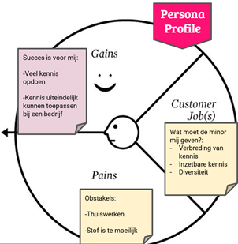
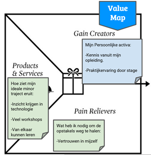

Mijn Persona Profile
Om te kijken hoe ik de minor voor mij zie heb ik een persona profile gemaakt.
Persona Profile 
De persona profile bestaat uit twee gedeeltes: Value Map en Persona Profile. Eerst ga ik kijken naar het gedeelte Persona Profile. Het Persona Profile bestaat uit drie gedeeltes: Gaines, Gaines en Customer Jobs.
Gaines
Voor iedereen is succes anders, want iedereen die de minor volgt heeft een andere gevoel of de minor succesvol is geweest voor hem of haar. Voor Mij is de minor Smart Industry succesvol geweest als ik veel nieuwe kennis over technologie heb gekregen. Ik hoop dat ik de kennis ook interessant vindt, zodat ik dit kan gaan gebruiken bij mijn toekomstige werk. Ik ga heel open deze minor in omdat het heel breed is en ik op dit moment nog niet veel kennis over technologie heb.
Pains
Soms staan er dingen in de weg om je succes te behalen. Je hebt niet altijd invloed op deze dingen, maar je kan ze wel verlichten door je Pain Relievers. Voor mij is een Pain dat wij op dit moment thuis moeten werken door corona, om je concentratie erbij te houden is het soms lastig als alleen werkt. Naast het alleen thuiswerken is ook een Pain dat de stof misschien te moeilijk is. Ik doe de opleiding Finance and Control waarbij wij geen kennis krijgen over technologie. Persoonlijk ben ik altijd wel geïnteresseerd in technologie, alleen ik heb eigenlijk nooit de behoefte gehad om mij hierin te verdiepen. Het kan zo zijn dat de stof te moeilijk is voor mij, waardoor ik de minor niet kan halen. Dit is een scenario waar ik geen rekening mee gehouden. Ik ga mij 100% inzetten om deze minor te halen.
Customer Jobs
De Customer Jobs gaat over wat je verwacht dat de minor Smart Industry jou gaat bieden. Voor mij was de reden om deze minor te gaan volgen dat de minor mij verbreding van kennis zal geven. Ik wil wat meer kennis krijgen over technologie en wat mooi zou zijn is dat ik dit ook kan gaan combineren met mijn huidige opleiding. Ik verwacht ook dat de minor heel divers qua onderwerpen is. De kennis die ik krijg tijdens deze minor wil ik graag in de toekomst kunnen toepassen bij mijn werk. Het lijkt mij namelijk leuk om mijn opleiding Finance and Control en technologie te kunnen combineren.
Value Map 
In dit hoofdstuk ga ik het hebben over de Value Map. De Value Map bestaat uit drie componenten: Gain Creators, Pain relievers en Products and Services.
Gain Creators
De Gain Creators is wat op dit moment hebt om je succes te kunnen behalen. Op dit moment kan ik mijn kennis uit mijn opleiding in zetten om mijn succes te kunnen behalen. Tijdens de minor is het ook van belang dat je kennis hebt over de business, dit is tijdens mijn opleiding al wel behandelt. Ook heb ik al eerder opdrachten voor bedrijven gedaan, dus ik weet wat ik kan verwachten tijdens de opdracht van de minor. Voor de opdracht van de minor gaan we samenwerken met een bedrijf, ik weet hoe je goed met een bedrijf moet samenwerken door eerdere stages.
Pain Relievers
Welke Pain Pelievers kan ik gebruiken om mijn Pains minder erg te maken. Om mijn Pains te verminderen is het belangrijk dat ik vertrouwen heb in mijzelf. Mocht de stof te moeilijk zijn is het belangrijk dat je aan andere durft te vragen of ze je kunnen helpen. Als het lastig wordt om thuis te werken is het belangrijk dat ik op tijd om hulp vraag bij de docent.
Products and Services
Hoe ziet mijn ideale minor eruit? Wat ik verwacht van de minor is dat ik veel kennis gekregen over technologie. De technologie hoop ik te kunnen verkrijgen door verschillende workshops. Ook verwacht ik dat ik veel van andere studenten. Deze minor heeft veel studenten van verschillende opleidingen, hierdoor geeft de mogelijkheid zich aan om van elkaar te leren.